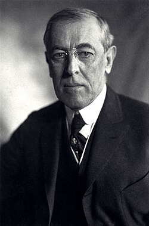

Radimo na unapređenju srpsko-američkih odnosa i uloge mladih u unapređenju istih.
Radimo na unapređenju srpsko-američkih odnosa i uloge mladih u unapređenju istih.

Upoznati smo sa velikim patnjama kroz koje je Srbija prošla i naše saosećanje, kao i naše iskreno prijateljstvo i velika želja da pomognemo, su uz vaše hrabre ljude u svakom trenutku tokom ovog tragičnog rata. Siguran sam da se pravda za Srbiju nalazi u vrhu prioriteta svakog mislećeg i patriotskog stanovnika Sjedinjenih Država.